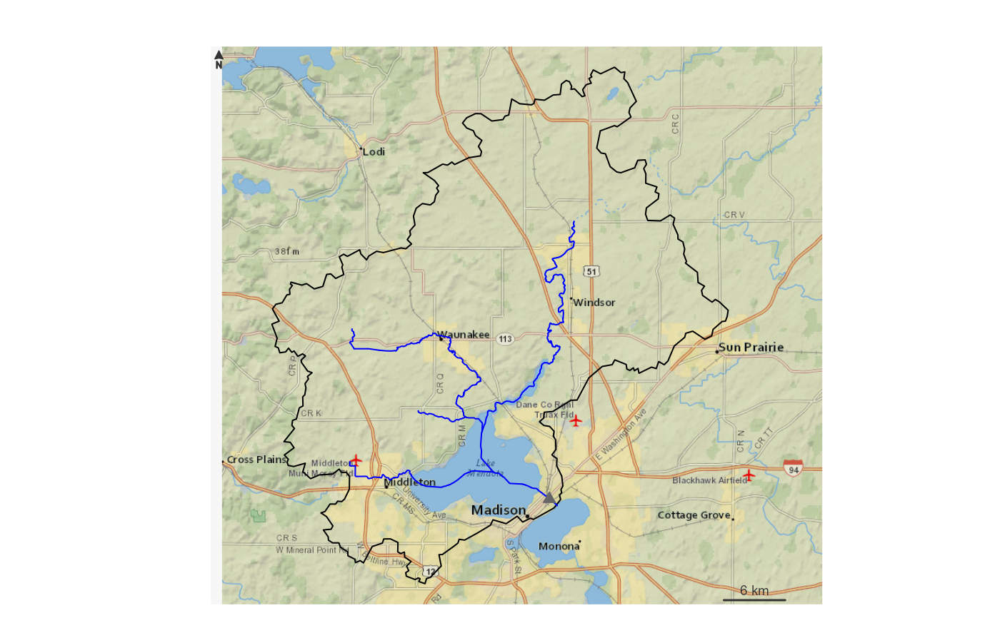

Given a list of outlets, get their basin boundaries and network and return a plot.
plot_nhdplus(outlets = NA, bbox = NA, streamorder = NA, nhdplus_data = NA, gpkg = NA, plot_config = NA, ...)
Arguments
| outlets | list of nldi outlets. Other inputs are coerced into nldi outlets, see details. |
|---|---|
| bbox | vector of map limits (xmin, ymin, xmax, ymax) that can be coerced into an object of class bbox. |
| streamorder | integer only streams of order greater than or equal will be returned |
| nhdplus_data | geopackage containing source nhdplus data |
| gpkg | path and file with .gpkg ending. If NA, no file is written. |
| plot_config | list containing plot configuration, see details. |
| ... | parameters passed on to rosm. |
Details
plot_nhdplus supports several input specifications. An unexported function "as_outlet" is used to convert the outlet formats as described below.
if outlets is omitted, the bbox input is required and all nhdplus data in the bounding box is plotted. (not implemented)
If outlets is a list of integers, it is assumed to be NHDPlus IDs (comids) and all upstream tributaries are plotted.
if outlets is an integer vector, it is assumed to be all NHDPlus IDs (comids) that should be plotted. (not implemented)
If outlets is a character vector, it is assumed to be NWIS site ids.
if outlets is a list containing only characters, it is assumed to be a list of nldi features and all upstream tributaries are plotted.
if outlets is a data.frame with point geometry, a point in polygon match is performed and upstream with tributaries from the identified catchments is plotted.
The plot_config parameter is a list with names "basin", "flowline" and "outlets".
The following shows the defaults that can be altered.
flowline
list(lwd = 1, col = "blue")outlets
list(default = list(col = "black", border = NA, pch = 19, cex = 1), nwissite = list(col = "grey40", border = NA, pch = 17, cex = 1), huc12pp = list(col = "white", border = "black", pch = 22, cex = 1), wqp = list(col = "red", border = NA, pch = 20, cex = 1))
Examples
plot_nhdplus("05428500")#>#>#>#>#>#>sample_data <- system.file("extdata/sample_natseamless.gpkg", package = "nhdplusTools") plot_nhdplus(list(13293970, 13293750), streamorder = 3, nhdplus_data = sample_data)#>#>#>plot_nhdplus(list(list("comid", "13293970"), list("nwissite", "USGS-05428500"), list("huc12pp", "070900020603"), list("huc12pp", "070900020602")), streamorder = 2, nhdplus_data = sample_data)#>#>#>plot_nhdplus(sf::st_as_sf(data.frame(x = -89.36083, y = 43.08944), coords = c("x", "y"), crs = 4326), streamorder = 2, nhdplus_data = sample_data)#>#>#>plot_nhdplus(list(list("comid", "13293970"), list("nwissite", "USGS-05428500"), list("huc12pp", "070900020603"), list("huc12pp", "070900020602")), streamorder = 2, nhdplus_data = sample_data, plot_config = list(basin = list(lwd = 2), outlets = list(huc12pp = list(cex = 1.5), comid = list(col = "green"))))#>#>#>